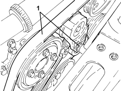
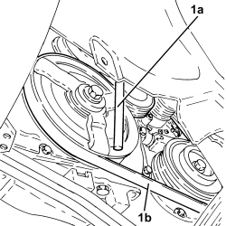

1092G10 SINGLE ENGINE BELT - R.R
- Path
- Procedures > 10 ENGINE > 1092 ENGINE COMPONENT MISCELLANEOUS DRIVES > 1092G SINGLE DRIVE BELT FOR VARIOUS ENGINE COMPONENTS > 1092G10 SINGLE ENGINE BELT - R.R
- Kind
- repair procedure (removal / refitting; the operation number is the code)
- Applies to
- all engines; all production periods
- Interactive page
- https://sloeber94.github.io/elrnDB-aBrrSpdr/en/#/946002036
Applies to: engines: 3.2 JTS; all production periods
 Removing
Removing
 Refitting
Refitting- Position the vehicle on a lift.
Op. 4450B04 RIGHT FRONT WHEEL - R.R
Op. 7055B66 ENGINE COMPARTMENT DUST COVER IN RIGHT FRONT WHEEL ARCH - R.R.
Op. 7055B91 RIGHT FRONT WHEEL ARCH LINER - R.R.
Op. 1008B10 POWER UNIT FRONT SUPPORT FLEXIBLE MOUNTING (TIMING SIDE) - REPLACE
Op. 1008A46 POWER UNIT RIGID SUPPORT - TIMING SIDE - R.R.
1. Loosen the belt tension rotating the moving the tensioner clockwise and then remove the single engine components drive belt.

Applies to: engines: 3.2 JTS; all production periods
Refitting
Removing- Place the engine components single belt in its housing and tension it via the moving tensioner.
Op. 1008A46 POWER UNIT RIGID SUPPORT - TIMING SIDE - R.R.
Op. 1008B10 POWER UNIT FRONT SUPPORT FLEXIBLE MOUNTING (TIMING SIDE) - REPLACE
Op. 7055B91 RIGHT FRONT WHEEL ARCH LINER - R.R.
Op. 7055B66 ENGINE COMPARTMENT DUST COVER IN RIGHT FRONT WHEEL ARCH - R.R.
Applies to: engines: 2.4 JTD 20v; all production periods
Removing
Refitting- Position the vehicle on a lift.
Op. 1048A41 HOSE FROM FLOW METER TO TURBOCHARGER - R.R.
Op. 4450B04 RIGHT FRONT WHEEL - R.R
Op. 7055B66 ENGINE COMPARTMENT DUST COVER IN RIGHT FRONT WHEEL ARCH - R.R.
Op. 7055B91 RIGHT FRONT WHEEL ARCH LINER - R.R.
1. Adjust the moving tensioner using the tool to slacken the tension in the auxiliary drive belt.
Tool | Description | Function | Validity |
|---|---|---|---|
1860966000 | Spanner | Loosen the auxiliary drive belt tension | 2.4 JTD 20V |
2. Prise the auxiliary drivebelt off the crankshaft pulley and the air conditioner compressor.

Applies to: engines: 2.4 JTD 20v; all production periods
- Working from the engine compartment, prise the auxiliary drivebelt off the power steering pump and remove.
Applies to: engines: 2.4 JTD 20v; all production periods
Refitting
Removing- Working from the engine compartment, fit the auxiliary drivebelt to the power steering pump.
- Apply the tool to the mobile tensioner to hold it in position so that the belt is slack.
Tool | Description | Function | Validity |
|---|---|---|---|
1860966000 | Spanner | Loosen the auxiliary drive belt tension | 2.4 JTD 20V |
- Fit the auxiliary drivebelt to the crankshaft pulley and the air conditioner compressor.
Op. 7055B91 RIGHT FRONT WHEEL ARCH LINER - R.R.
Op. 7055B66 ENGINE COMPARTMENT DUST COVER IN RIGHT FRONT WHEEL ARCH - R.R.
Op. 4450B04 RIGHT FRONT WHEEL - R.R
Op. 1048A41 HOSE FROM FLOW METER TO TURBOCHARGER - R.R.
- Remove the vehicle from the lift.
Applies to: engines: 2.2 JTS; all production periods
Removing
Refitting- Position the vehicle on a lift.
Op. 4450B04 RIGHT FRONT WHEEL - R.R
Op. 7055B66 ENGINE COMPARTMENT DUST COVER IN RIGHT FRONT WHEEL ARCH - R.R.
Op. 1048A28 VACUUM AIR CIRCUIT RESONATOR PIPE - R+R
Op. 1048A34 HOSE(S) FROM FLOW METER TO AIR SUPPLY CAPACITY CASE - R + R
Op. 1092C26 BELT FROM AIR CONDITIONER COMPRESSOR DRIVING POWER STEERING PUMP - R + R
1. Use a suitable wrench (1a) to adjust the moving tensioner and prise off the auxiliary drivebelt (1b).

Applies to: engines: 2.2 JTS; all production periods
Refitting
Removing- Refit the auxiliary drivebelt by adjusting the moving tensioner with the wrench.
Op. 1092C26 BELT FROM AIR CONDITIONER COMPRESSOR DRIVING POWER STEERING PUMP - R + R
Op. 1048A34 HOSE(S) FROM FLOW METER TO AIR SUPPLY CAPACITY CASE - R + R
Op. 1048A28 VACUUM AIR CIRCUIT RESONATOR PIPE - R+R
Op. 7055B66 ENGINE COMPARTMENT DUST COVER IN RIGHT FRONT WHEEL ARCH - R.R.
Op. 4450B04 RIGHT FRONT WHEEL - R.R
- Remove the vehicle from the lift.
Topics linked from this page (9)
- 1008A46 POWER UNIT RIGID SUPPORT - TIMING SIDE - R.R.
- 1008B10 POWER UNIT FRONT SUPPORT FLEXIBLE MOUNTING (TIMING SIDE) - REPLACE
- 1048A28 VACUUM AIR CIRCUIT RESONATOR PIPE - R+R
- 1048A34 HOSE(S) FROM FLOW METER TO AIR SUPPLY CAPACITY CASE - R + R
- 1048A41 HOSE FROM FLOW METER TO TURBOCHARGER - R.R.
- 1092C26 BELT FROM AIR CONDITIONER COMPRESSOR DRIVING POWER STEERING PUMP - R + R
- 4450B04 RIGHT FRONT WHEEL - R.R
- 7055B66 ENGINE COMPARTMENT DUST COVER IN RIGHT FRONT WHEEL ARCH - R.R.
- 7055B91 RIGHT FRONT WHEEL ARCH LINER - R.R.
Topics that link to this page (21)
- 5530AB ALTERNATOR CHECK
- 0010M20 120,000KM SERVICE
- 1020A20 CRANKCASE OIL SUMP - R.R CLEAN SURFACES FOR SEALANT APPLICATION
- 1020D14 FRONT CRANKSHAFT OIL SEAL COVER - R.R AND REPLACE SEALS FOR VERSIONS WITH OIL PUMP ON CRANKSHAFT, TIMING SIDE
- 1020D18 FRONT CRANKSHAFT COVER OIL SEAL - R.R.
- 1028H10 CONNECTING ROD AND PISTON SET - R.R
- 1032A10 CHAIN GEARS AND TIMING SYSTEM COMPONENTS R R
- 1032A12 TIMING SYSTEM DRIVE CHAIN - R.R
- 1032C41 TIMING SYSTEM FIXED CHAIN TENSIONER PAD R R
- 1036L30 FRONT OIL SEAL FOR CAMSHAFT IN CAMSHAFT HOUSING - REPLACE
- 1084A40 ENGINE OIL LEVEL SENSOR - R + R
- 1084B12 ENGINE OIL PUMP - R+R
- 1088C10 WATER PUMP - R + R
- 1088C22 WATER PUMP PULLEY - R.R.
- 1092A10 CRANKSHAFT PULLEY - R + R
- 1092B75 AIR CONDITIONING COMPRESSOR/POWER STEERING PUMP DRIVE CHAIN - R.R.
- 1092B92 WATER PUMP /BALANCING SHAFT DRIVE CHAIN HYDRAULIC TENSIONER R R
- 1092G14 ENGINE COMPONENT SINGLE BELT MOVING TENSIONER - R + R
- 4130B20 POWER STEERING PUMP - R.R.
- 5040A20 AIR CONDITIONING COMPRESSOR - R+R - INCLUDES FLUID LEVEL CHECK AND TOP UP IF NECESSARY
- 5530A10 ALTERNATOR - R+R